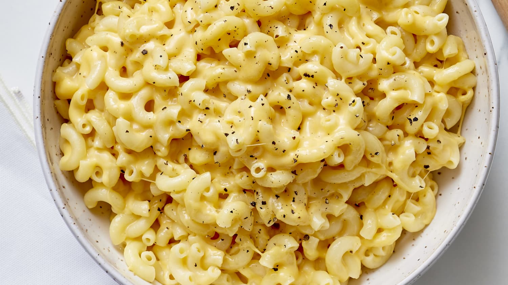

Macaroni

Description
Macaroni and cheese is a dish of cooked macaroni pasta and a cheese sauce, most commonly cheddar. It can also incorporate other ingredients, such as breadcrumbs or meat.
Traditional macaroni and cheese is a casserole baked in the oven; however, it may be prepared in a sauce pan on top of the stove or using a packaged mix. The cheese is often first incorporated into a Béchamel sauce to create a Mornay sauce, which is then added to the pasta.
Ingredients
- 1 (8 ounce) box of elbow macaroni
- ¼ cup of butter
- ¼ cup of all-purpose flour
- ½ teaspoon of salt
- ground black pepper to taste
- 2 cups of milk
- 2 cups of shredded Cheddar cheese
Steps
-
Bring a large pot of lightly salted water to a boil. Cook elbow macaroni in the boiling water, stirring occasionally until cooked through but firm to the bite, 8 minutes.
-
At the same time, melt butter in a saucepan over medium heat. Add flour, salt, and pepper and stir until smooth, about 5 minutes. Pour in milk slowly, while stirring continuously. Continue to cook and stir until mixture is smooth and bubbling, about 5 minutes, making sure the milk doesn't burn.
-
Add Cheddar cheese and stir until melted, 2 to 4 minutes.
-
Drain macaroni and fold into cheese sauce until coated.
Go Back to Homepage.